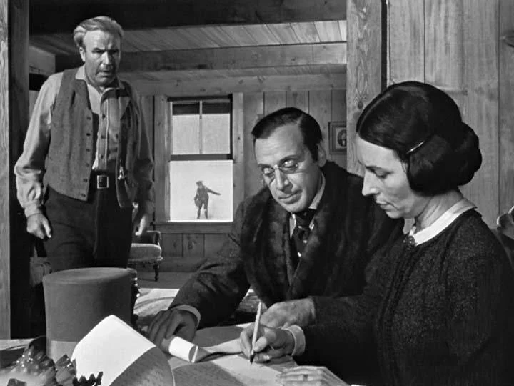

L'immagine fotografica e le lenti
La cinematografia inizia dalla manipolazione della luce. Il regista e il direttore della fotografia scelgono lenti ed esposizione per modificare la nostra percezione. Ad esempio, una lente grandangolare (a focale corta) fa sembrare lo spazio più profondo e distorce i bordi, mentre un teleobiettivo (a focale lunga) "schiaccia" l'immagine, facendo sembrare gli oggetti molto vicini tra loro, spesso usato per scene di folla o inseguimenti.
La profondità di campo (depth of field) è un'altra scelta cruciale. Se è ridotta, solo il soggetto principale è a fuoco (isolandolo dal resto); se è estesa (deep focus), sia il primo piano che lo sfondo sono nitidi, come in Quarto Potere, permettendo allo spettatore di esplorare tutta l'inquadratura.
